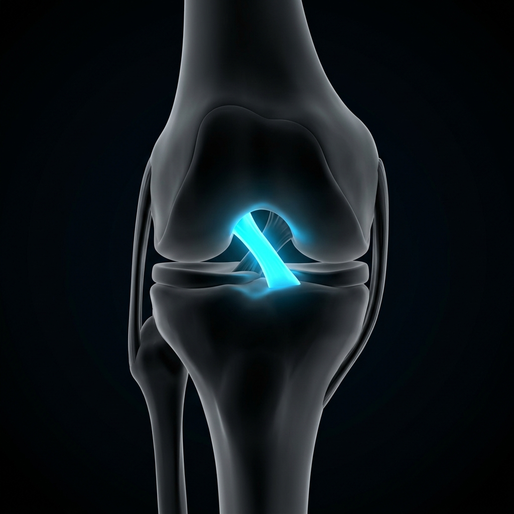
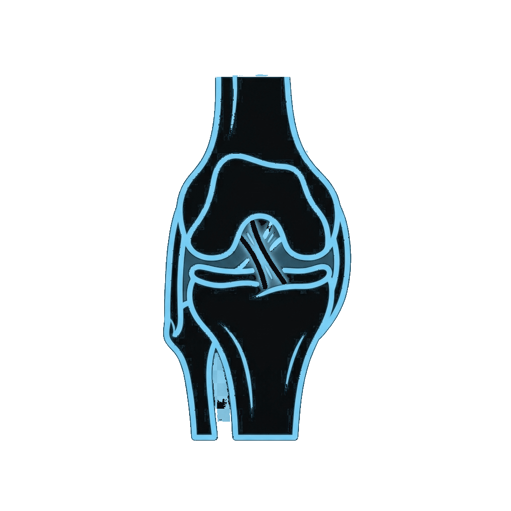
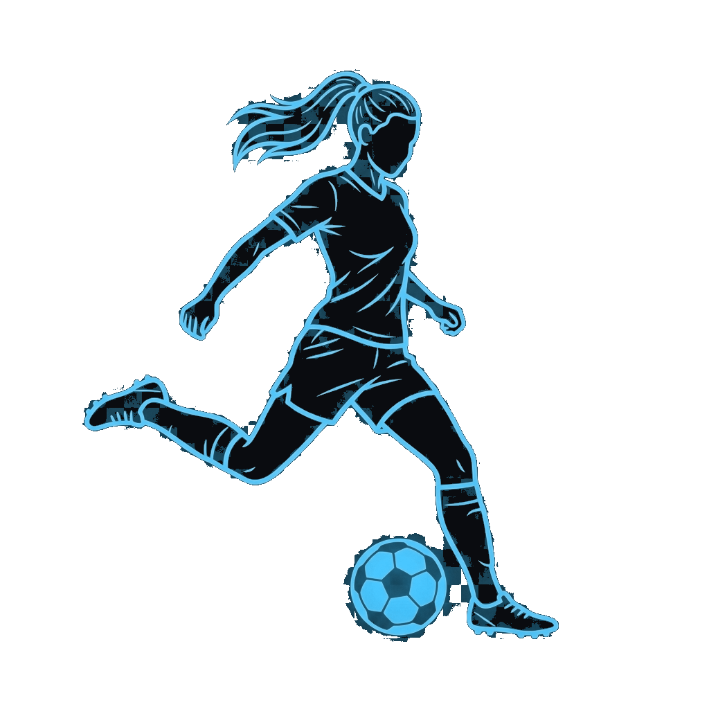

Calling all teenage female soccer players! Join our study! Let's work together to stop the growing risk of ACL injury in young female soccer players!
Role of Footwear and Playing Surface in Female ACL Injuries
Help us investigate the link between soccer footwear, playing surface and anterior cruciate ligament injuries in teenage girls by doing a two minute questionnaire.

About the Research
Understanding the impact of footwear and playing surface on ACL injuries in soccer

The Problem
ACL injuries are a major growing concern in women's soccer affecting not just professional players but also many teenage players. There is still limited large-scale, player-reported data examining how modifiable factors such as footwear type, stud type and playing surface influence injury risk, particularly in teenage athletes.
Our Goal
This study aims to collect a large volume of self reported data to examine these factors and how they may interact in affecting ACL injury risk in this age group.

Why Participate
It takes two minutes, is completely anonymous and you would be contributing to knowledge that will hopefully change the future of ACL risk in teenage female soccer players.
Research Questionnaire
Please provide accurate details. All entries are anonymous.